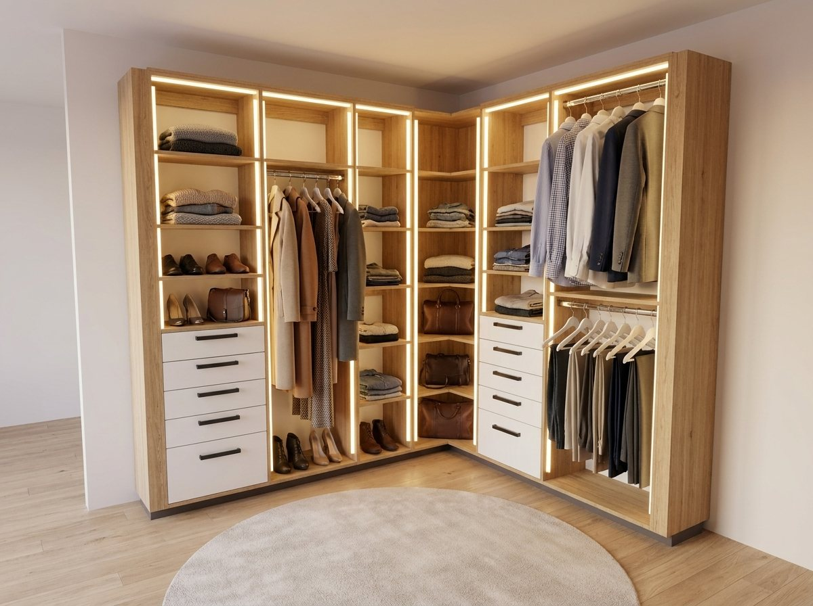
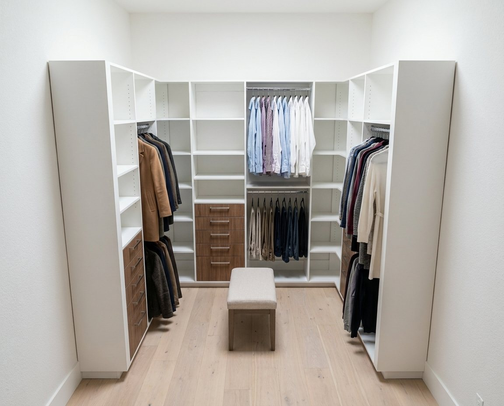

Door styles · finishes · construction
Step one
Six framed-door collections, each offered in its own range of painted and stained finishes.
The timeless recessed five-piece door: clean lines that suit any kitchen, traditional to modern.
White · Gray · Blue · Oak · Maple · Espresso · Plata · Ash · Black
A narrower frame and tighter reveal for a crisp, contemporary take on the Shaker look.
White · Grey · Blue · Oak · Maple · Black
An extra inner frame adds depth and a tailored, furniture-grade feel.
White · Plata · Oak · Café · Walnut · Black Oak
A slim-frame raised panel: a soft step up in detail without the fuss.
White · Gray · Blue · Oak · Maple · Black Oak
A beveled recessed panel with quiet shadow lines: transitional and elegant.
White · Gray · Green · Oak · Maple · Black Oak
A traditional raised-panel door with warmth and character for a classic kitchen.
Antique White · Grey · Maple Cherry · Mocha · Chestnut · Chocolate · Ash
Door drawings are schematic profiles, not to scale. Ask us for finish samples.
Step two
Seventeen painted and stained finishes. Ask for any as a free door sample before you decide.
Shaker White, Dove White, Aspen White, Charleston White
Lunar Gray, Gray Shaker, Smokey Gray, Aspen Charcoal
Sage Breeze, Aston Green, Navy Blue, Iron Black
White Oak, Treasure Chest, Amber Oak, Rustic Wood, Shaker Espresso

AI-enhanced rendering of a closet designed in our design tool.
Built the same, whatever you pick

AI-enhanced rendering of a closet designed in our design tool.
Next step
Not sure on a color? We will get door samples in your hands before you commit.
Design your cabinets online: thelocalcabinetry.com/design
Email: info@thelocalcabinetry.com
Phone: +1 346-758-7867
Houston, TX · warehouses nationwide